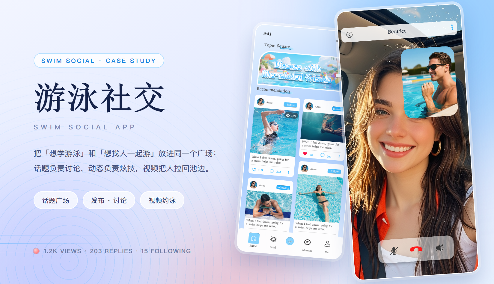
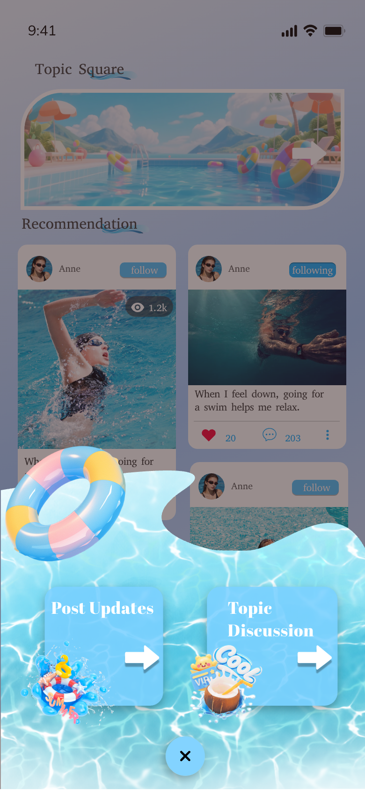
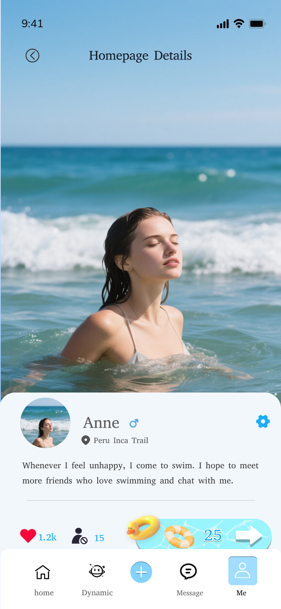

游泳社交 · 游泳技术分享社区 App
学游泳最难的两件事：找不到人问，也没人看见你在练。这个 App 把两件事拆成两条路——话题广场负责「被看见」，话题列表与讨论负责「有人答」，加号把发布分成 Post Updates 与 Topic Discussion，视频通话让人直接出现在池边。视觉上只留两种蓝：淡紫蓝做纸，泳池蓝只给按下会发生事的按钮，珊瑚红只给点赞与挂断。
主视觉

项目背景
运动社区 · 话题与动态双线
这款 App 服务两类人：刚学游泳、想找教程与同伴的新手，和已经游得很好、想被看见的泳者。旧版把两者塞进同一条按时间排的信息流——新手刷到一堆炫技视频，找不到一条可执行的建议；老手发了作品也只有陌生人点个赞，聊不起来。
重做没有加新功能，而是把「看」和「聊」分开：广场用双列动态承接内容，话题用列表承接讨论，发布入口用一张水花浮层把两条路一次问清；再往外补齐个人主页与视频通话，让「这个人」和「这个人在池边」两件事都成立。
设计策略
两个入口、三种容器、一条动线
- 广场三段式，一屏交代清楚：顶部一条 92px 的插画 banner，标题 Discuss with like-minded friends 直接压在插画里；下面 Recommendation 双列动态；底部固定五格 tab（home / Feed / ＋ / Message / Me）。banner 不占内容位，第一屏至少露出 1.5 张动态卡。
- 动态卡只留三处文字：图片右上角一颗浏览量角标（1.2k），卡片下方一句正文（最多两行，超出省略），底部三个统计（点赞 / 评论 / 更多）。作者名与 follow 胶囊固定在卡片顶部一行，滑到哪都在同一高度。
- 发布不直接进编辑器：点中间加号，先把一张水花浮层推上来，只放两张卡——Post Updates（发动态）与 Topic Discussion（开讨论），右下角一颗 × 关闭。先分流，再进各自的编辑页，避免一半人发错类型。
- 话题列表一行一话题：左边 96×96 缩略图，右边标题 + Join 蓝胶囊，行尾一颗竖三点收举报与屏蔽。缩略图统一 12px 圆角，标题最多两行，Join 只在未加入时出现——状态本身就是区分点。
- 个人主页用全屏实拍开场：照片占上半屏，白色 sheet 从图下沿升起，头像 + 昵称 + 性别符号 + 地点（Peru Inca Trail）压在第一行；下面是简介、三个数字（点赞 / 关注 / 会员天数）与一条金色环 + 珊瑚红 25 天的会员条，再往下 Recent works 双列作品墙，底部 tab 与广场一致。
部分界面截图
交付覆盖话题 / 动态 / 发布 / 主页 / 通话 · 这里节选 5 屏
这个 App 是按整站交付的：话题广场、话题列表与讨论、动态详情、发布（Post Updates / Topic Discussion 两条）、个人主页与作品墙、消息、视频通话、设置都有稿。下面 5 屏是节选，全部来自设计稿原图；同一批导出里另有一版首页（第 6 张），保留作对照，没有进正文。
挑这 5 屏是因为它们各自回答一个问题——内容怎么分两层（广场）、话题怎么被挑出来（列表）、两条发布路怎么分开（水花浮层）、这个人是谁（个人主页）、怎么把人拉到池边（视频通话）。





视觉语言
淡紫蓝 · 泳池蓝 · 珊瑚红 · 墨蓝
淡紫蓝 #dfe6fb 铺满整屏，是水；泳池蓝 #2fa8ff 只给「按下去会发生事」的地方——Join、follow、发送、＋；珊瑚红 #ff5b5f 只给点赞与挂断，全屏只有这两处会出现暖色；墨蓝 #16234a 承担所有文字，比纯黑软一档。标题走衬线（Discuss with like-minded friends / Homepage Details），正文回到系统无衬线，一屏只用一个衬线标题做对比。形状上卡片 20–28px 圆角、图片圆角比卡片小一档、按钮全部胶囊、投影极浅——实拍本身已经够重，界面要往后退。话题名统一做成压在照片底部的深色胶囊，位置固定在左下，长名字截断。
遇到的问题与解决
4 个「看」与「聊」打架的取舍
问题广场既要有话题入口，又要有内容；banner 一占位，第一屏就只剩半张动态卡。
解决把 banner 做成一条 92px 高的插画胶囊，标题直接压在插画里，不再是「标题 + 图」两块；banner 不进双列网格，下面紧接 Recommendation 标签，保证第一屏永远露出 1.5 张动态卡。高度写进组件，后续换插画不改版式。
问题加号是全 App 最高频的位置，但它同时通向「发动态」和「开话题」，直接进编辑器会让一半人发错类型。
解决加号先弹一张水花浮层：两张卡 + 一句提示，Post Updates 与 Topic Discussion 各占一边，右下角一颗 × 关闭；浮层用半透明水花遮住底下内容，让「现在在做选择」一眼可见，选完再进各自的编辑页。
问题话题列表每一行长得一模一样，用户无法判断该进哪个。
解决缩略图固定 96×96 但保留原图的裁切差异，标题允许两行并把关键词放前面；行尾三点收走举报与屏蔽，Join 只在未加入时出现——用状态差与文字差区分，而不是加更多图标。
问题个人主页要同时放实拍、简介、数据、会员与作品墙，一屏根本放不下。
解决按「人 → 关系 → 内容」排：实拍只在顶部做开场，滚过 240px 后收起；白色 sheet 承担简介 + 三个数字 + 会员条；Recent works 用 1:1 与 4:5 两种比例混排，避免整屏等宽，也让作品墙一眼看得出是两列而不是两栏。
从设计到交付
3 步 · 定淡紫蓝、拆两条发布路、对双端
-
1 · 概念 · 一条「池边」的动线
先定气质：淡紫蓝底 + 衬线标题 + 满屏实拍，读起来像一场夏日泳池，而不是一个运动数据工具。用话题广场与个人主页两屏打样，确认「照片在前、界面退后」这条底线。
-
2 · 制作 · 先拆发布，再铺全站
把「看内容」与「发内容」两条路拆清楚之后才铺页面：话题广场、话题列表、动态详情、Post Updates、Topic Discussion、个人主页与作品墙、消息、视频通话、设置；follow 胶囊、Join、会员条收成一套图标与组件规范。
-
3 · 交付 · 组件、标注与走查
交付组件 Variant 与页面清单，和开发一起走查 iOS / Android：长屏实拍在 2x / 3x 下的裁切、淡紫蓝在 OLED 上的偏色、视频通话里自己小窗的安全区，以及长话题名与长简介是否顶破压条，逐项确认。
交付内容
这次做了什么